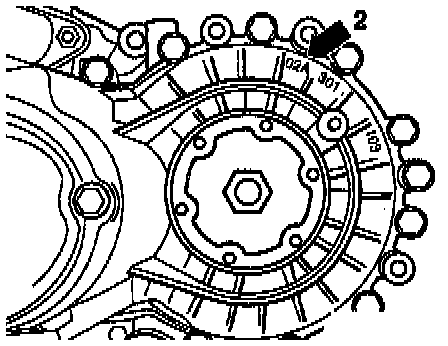

Gearbox Identification
MANUAL TRANSMISSION 02A, IDENTIFYING- The 5-speed manual transmission 02A is installed in Golf, GTI and Jetta vehicles equipped the 2.8 liter VR6 6-cylinder engine.
ENGINE/TRANSMISSION APPLICATIONS
02a Transmission Specifications (Part 1 Of 2):

02a Transmission Specifications (Part 2 Of 2):

LOCATION ON TRANSMISSION

- Transmission code letters and date of manufacture (arrow -1-)
- Manual transmission type 02A (arrow -2-)

- Manual transmission type 02A (arrow -2-)

CODE LETTERS AND DATE OF MANUFACTURE ON TRANSMISSION

- Additional data depends on manufacture.
NOTE: The transmission code letters are also shown on the vehicle identification plates.